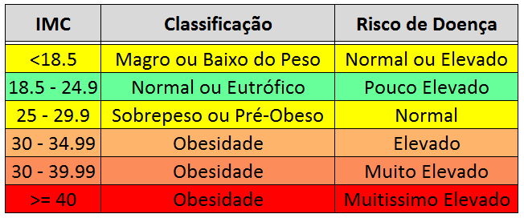

O IMC é um índice que mede se você está abaixo, dentro ou acima do peso, de acordo com a relação entre seu peso e altura. Descubra como calcular esse índice, quais os valores ideais, as exceções da tabela padrão, a especificidade do IMC para crianças e jovens e muito mais neste artigo completo. Abaixo segue uma tabela sobre as medidas:
*Só faltou calcular de verdade vaguin, não consegui :(